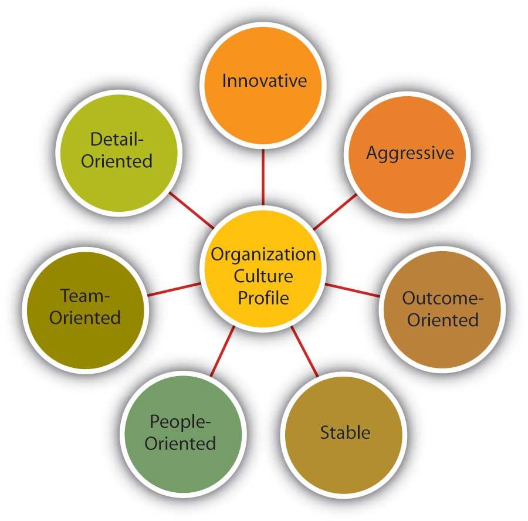

Which values characterize an organization’s culture? Even though culture may not be immediately observable, identifying a set of values that might be used to describe an organization’s culture helps us identify, measure, and manage culture more effectively. For this purpose, several researchers have proposed various culture typologies. One typology that has received a lot of research attention is the organizational culture profile (OCP), in which culture is represented by seven distinct values.Chatman, J. A., & Jehn, K. A. (1991). Assessing the relationship between industry characteristics and organizational culture: How different can you be? Academy of Management Journal, 37, 522–553; O’Reilly, C. A., III, Chatman, J. A., & Caldwell, D. F. (1991). People and organizational culture: A profile comparison approach to assessing person-organization fit. Academy of Management Journal, 34, 487–516. We will describe the OCP as well as two additional dimensions of organizational culture that are not represented in that framework but are important dimensions to consider: service culture and safety culture.
Figure 15.4 Dimensions of Organizational Culture Profile (OCP)
Source: Adapted from information in O’Reilly, C. A., III, Chatman, J. A., & Caldwell, D. F. (1991). People and organizational culture: A profile comparison approach to assessing person-organization fit. Academy of Management Journal, 34, 487–516.
According to the OCP framework, companies that have innovative culturesCultures that are flexible, adaptable, and experiment with new ideas. are flexible and adaptable, and experiment with new ideas. These companies are characterized by a flat hierarchy in which titles and other status distinctions tend to be downplayed. For example, W. L. Gore & Associates Inc. is a company with innovative products such as GORE-TEX® (the breathable fabric that is windproof and waterproof), Glide dental floss, and Elixir guitar strings, earning the company the distinction of being elected as the most innovative company in the United States by Fast Company magazine in 2004. W. L. Gore consistently manages to innovate and capture the majority of market share in a wide variety of industries, in large part due to its unique culture. In this company, employees do not have bosses in the traditional sense, and risk taking is encouraged by celebrating failures as well as successes.Deutschman, A. (2004, December). The fabric of creativity. Fast Company, 89, 54–62. Companies such as W. L. Gore, Genentech Inc., and Google also encourage their employees to take risks by allowing engineers to devote 20% of their time to projects of their own choosing.Deutschman, A. (2004, December). The fabric of creativity. Fast Company, 89, 54–62; Morris, B., Burke, D., & Neering, P. (2006, January 23). The best place to work now. Fortune, 153, 78–86.
Figure 15.5
Microsoft, the company that Bill Gates cofounded, has been described as having an aggressive culture.
Companies with aggressive culturesCultures that value competitiveness and outperforming competitors. value competitiveness and outperforming competitors: By emphasizing this, they may fall short in the area of corporate social responsibility. For example, Microsoft Corporation is often identified as a company with an aggressive culture. The company has faced a number of antitrust lawsuits and disputes with competitors over the years. In aggressive companies, people may use language such as “We will kill our competition.” In the past, Microsoft executives often made statements such as “We are going to cut off Netscape’s air supply.…Everything they are selling, we are going to give away.” Its aggressive culture is cited as a reason for getting into new legal troubles before old ones are resolved.Greene, J., Reinhardt, A., & Lowry, T. (2004, May 31). Teaching Microsoft to make nice? Business Week, 3885, 80–81; Schlender, B. (1998, June 22). Gates’ crusade. Fortune, 137, 30–32. Recently, Microsoft founder Bill Gates established the Bill & Melinda Gates foundation and is planning to devote his time to reducing poverty around the world.Schlender, B. (2007, December 10). Bill Gates. Fortune, 156, 54. It will be interesting to see whether he will bring the same competitive approach to the world of philanthropy.
The OCP framework describes outcome-oriented culturesCultures that emphasize achievement, results, and action as important values. as those that emphasize achievement, results, and action as important values. A good example of an outcome-oriented culture may be Best Buy Co. Inc. Having a culture emphasizing sales performance, Best Buy tallies revenues and other relevant figures daily by department. Employees are trained and mentored to sell company products effectively, and they learn how much money their department made every day.Copeland, M. V. (2004, July). Best Buy’s selling machine. Business 2.0, 5, 92–102. In 2005, the company implemented a results oriented work environment (ROWE) program that allows employees to work anywhere and anytime; they are evaluated based on results and fulfillment of clearly outlined objectives.Thompson, J. (2005, September). The time we waste. Management Today, pp. 44–47. Outcome-oriented cultures hold employees as well as managers accountable for success and utilize systems that reward employee and group output. In these companies, it is more common to see rewards tied to performance indicators as opposed to seniority or loyalty. Research indicates that organizations that have a performance-oriented culture tend to outperform companies that are lacking such a culture.Nohria, N., Joyce, W., & Roberson, B. (2003, July). What really works. Harvard Business Review, 81, 42–52. At the same time, some outcome-oriented companies may have such a high drive for outcomes and measurable performance objectives that they may suffer negative consequences. Companies overrewarding employee performance such as Enron Corporation and WorldCom experienced well-publicized business and ethical failures. When performance pressures lead to a culture where unethical behaviors become the norm, individuals see their peers as rivals and short-term results are rewarded; the resulting unhealthy work environment serves as a liability.Probst, G., & Raisch, S. (2005). Organizational crisis: The logic of failure. Academy of Management Executive, 19, 90–105.
Stable culturesCultures that are predictable, rule oriented, and bureaucratic. are predictable, rule-oriented, and bureaucratic. These organizations aim to coordinate and align individual effort for greatest levels of efficiency. When the environment is stable and certain, these cultures may help the organization be effective by providing stable and constant levels of output.Westrum, R. (2004, August). Increasing the number of guards at nuclear power plants. Risk Analysis: An International Journal, 24, 959–961. These cultures prevent quick action, and as a result may be a misfit to a changing and dynamic environment. Public sector institutions may be viewed as stable cultures. In the private sector, Kraft Foods Inc. is an example of a company with centralized decision making and rule orientation that suffered as a result of the culture-environment mismatch.Thompson, S. (2006, September 18). Kraft CEO slams company, trims marketing staff. Advertising Age, 76, 3–62. Its bureaucratic culture is blamed for killing good ideas in early stages and preventing the company from innovating. When the company started a change program to increase the agility of its culture, one of their first actions was to fight bureaucracy with more bureaucracy: They created the new position of VP of business process simplification, which was later eliminated.Boyle, M. (2004, November 15). Kraft’s arrested development. Fortune, 150, 144; Thompson, S. (2005, February 28). Kraft simplification strategy anything but. Advertising Age, 76, 3–63; Thompson, S. (2006, September 18). Kraft CEO slams company, trims marketing staff. Advertising Age, 77, 3–62.
People-oriented culturesCultures that value fairness, supportiveness, and respecting individual rights. value fairness, supportiveness, and respect for individual rights. These organizations truly live the mantra that “people are their greatest asset.” In addition to having fair procedures and management styles, these companies create an atmosphere where work is fun and employees do not feel required to choose between work and other aspects of their lives. In these organizations, there is a greater emphasis on and expectation of treating people with respect and dignity.Erdogan, B., Liden, R. C., & Kraimer, M. L. (2006). Justice and leader-member exchange: The moderating role of organizational culture. Academy of Management Journal, 49, 395–406. One study of new employees in accounting companies found that employees, on average, stayed 14 months longer in companies with people-oriented cultures.Sheridan, J. (1992). Organizational culture and employee retention. Academy of Management Journal, 35, 1036–1056. Starbucks Corporation is an example of a people-oriented culture. The company pays employees above minimum wage, offers health care and tuition reimbursement benefits to its part-time as well as full-time employees, and has creative perks such as weekly free coffee for all associates. As a result of these policies, the company benefits from a turnover rate lower than the industry average.Weber, G. (2005, February). Preserving the counter culture. Workforce Management, 84, 28–34; Motivation secrets of the 100 best employers. (2003, October). HR Focus, 80, 1–15. The company is routinely ranked as one of the best places to work by Fortune magazine.
Companies with team-oriented culturesCultures that are collaborative and emphasize cooperation among employees. are collaborative and emphasize cooperation among employees. For example, Southwest Airlines Company facilitates a team-oriented culture by cross-training its employees so that they are capable of helping each other when needed. The company also places emphasis on training intact work teams.Bolino, M. C., & Turnley, W. H. (2003). Going the extra mile: Cultivating and managing employee citizenship behavior. Academy of Management Executive, 17, 60–71. Employees participate in twice daily meetings named “morning overview meetings” (MOM) and daily afternoon discussions (DAD) where they collaborate to understand sources of problems and determine future courses of action. In Southwest’s selection system, applicants who are not viewed as team players are not hired as employees.Miles, S. J., & Mangold, G. (2005). Positioning Southwest Airlines through employee branding. Business Horizons, 48, 535–545. In team-oriented organizations, members tend to have more positive relationships with their coworkers and particularly with their managers.Erdogan, B., Liden, R. C., & Kraimer, M. L. (2006). Justice and leader-member exchange: The moderating role of organizational culture. Academy of Management Journal, 49, 395–406.
Organizations with detail-oriented culturesCultures that emphasize precision and paying attention to details. are characterized in the OCP framework as emphasizing precision and paying attention to details. Such a culture gives a competitive advantage to companies in the hospitality industry by helping them differentiate themselves from others. For example, Four Seasons Hotels Ltd. and the Ritz-Carlton Company LLC are among hotels who keep records of all customer requests, such as which newspaper the guest prefers or what type of pillow the customer uses. This information is put into a computer system and used to provide better service to returning customers. Any requests hotel employees receive, as well as overhear, might be entered into the database to serve customers better. Recent guests to Four Seasons Paris who were celebrating their 21st anniversary were greeted with a bouquet of 21 roses on their bed. Such clear attention to detail is an effective way of impressing customers and ensuring repeat visits. McDonald’s Corporation is another company that specifies in detail how employees should perform their jobs by including photos of exactly how French fries and hamburgers should look when prepared properly.Fitch, S. (2004, May 10). Soft pillows and sharp elbows. Forbes, 173, 66–78; ford, R. C., & Heaton, C. P. (2001). Lessons from hospitality that can serve anyone. Organizational Dynamics, 30, 30–47; Kolesnikov-Jessop, S. (2005, November). Four Seasons Singapore: Tops in Asia. Institutional Investor, 39, 103–104; Markels, A. (2007, April 23). Dishing it out in style. U.S. News & World Report, 142, 52–55.
Service cultureA culture that emphasizes high quality service. is not one of the dimensions of OCP, but given the importance of the retail industry in the overall economy, having a service culture can make or break an organization. Some of the organizations we have illustrated in this section, such as Nordstrom, Southwest Airlines, Ritz-Carlton, and Four Seasons are also famous for their service culture. In these organizations, employees are trained to serve the customer well, and cross-training is the norm. Employees are empowered to resolve customer problems in ways they see fit. Because employees with direct customer contact are in the best position to resolve any issues, employee empowerment is truly valued in these companies. For example, Umpqua Bank, operating in the northwestern United States, is known for its service culture. All employees are trained in all tasks to enable any employee to help customers when needed. Branch employees may come up with unique ways in which they serve customers better, such as opening their lobby for community events or keeping bowls full of water for customers’ pets. The branches feature coffee for customers, Internet kiosks, and withdrawn funds are given on a tray along with a piece of chocolate. They also reward employee service performance through bonuses and incentives.Conley, L. (2005, April). Cultural phenomenon. Fast Company, 93, 76–77; Kuehner-Herbert, K. (2003, June 20). Unorthodox branch style gets more so at Umpqua. American Banker, 168, 5.
What differentiates companies with service culture from those without such a culture may be the desire to solve customer-related problems proactively. In other words, in these cultures employees are engaged in their jobs and personally invested in improving customer experience such that they identify issues and come up with solutions without necessarily being told what to do. For example, a British Airways baggage handler noticed that first-class passengers were waiting a long time for their baggage, whereas stand-by passengers often received their luggage first. Noticing this tendency, a baggage handler notified his superiors about this problem, along with the suggestion to load first-class passenger luggage last.Ford, R. C., & Heaton, C. P. (2001). Lessons from hospitality that can serve anyone. Organizational Dynamics, 30, 30–47. This solution was successful in cutting down the wait time by half. Such proactive behavior on the part of employees who share company values is likely to emerge frequently in companies with a service culture.
Figure 15.6

The growth in the number of passengers flying with Southwest Airlines from 1973 until 2007. In 2007, Southwest surpassed American Airlines as the most flown domestic airline. While price has played a role in this, their emphasis on service has been a key piece of their culture and competitive advantage.
Source: Adapted from http://upload.wikimedia.org/wikipedia/commons/6/69/Southwest-airlines-passengers.jpg.
Some jobs are safety sensitive. For example, logger, aircraft pilot, fishing worker, steel worker, and roofer are among the top 10 most dangerous jobs in the United States.Christie, L. (2005). America’s most dangerous jobs. Survey: Loggers and fisherman still take the most risk; roofers record sharp increase in fatalities. CNN/Money. Retrieved from http://money.cnn.com/2005/08/26/pf/jobs_jeopardy/. In organizations where safety-sensitive jobs are performed, creating and maintaining a safety cultureA culture that emphasizes safety as a strong workplace norm. provides a competitive advantage, because the organization can reduce accidents, maintain high levels of morale and employee retention, and increase profitability by cutting workers’ compensation insurance costs. Some companies suffer severe consequences when they are unable to develop such a culture. For example, British Petroleum experienced an explosion in their Texas City, Texas, refinery in 2005, which led to the death of 15 workers while injuring 170. In December 2007, the company announced that it had already depleted the $1.6-billion fund to be used in claims for this explosion.Tennissen, M. (2007, December 19). Second BP trial ends early with settlement. Southeast Texas Record. A safety review panel concluded that the development of a safety culture was essential to avoid such occurrences in the future.Hofmann, M. A. (2007, January 22). BP slammed for poor leadership on safety. Business Insurance, 41, 3–26. In companies that have a safety culture, there is a strong commitment to safety starting at management level and trickling down to lower levels. M. B. Herzog Electric Inc. of California, selected as one of America’s safest companies by Occupational Hazards magazine in 2007, had a zero accident rate for the past 3 years. The company uses safety training programs tailored to specific jobs within the company, and all employees are encouraged to identify all safety hazards they come across when they are performing their jobs. They are also asked to play the role of an OSHA (Occupational Safety and Health Administration) inspector for a day to become more aware of the hidden dangers in the workplace. Managers play a key role in increasing the level of safe behaviors in the workplace, because they can motivate employees day-to-day to demonstrate safe behaviors and act as safety role models. A recent study has shown that in organizations with a safety culture, leaders encourage employees to demonstrate behaviors such as volunteering for safety committees, making recommendations to increase safety, protecting coworkers from hazards, whistleblowing, and in general trying to make their jobs safer.Hofmann, D. A., Morgeson, F. P., & Gerras, S. J. (2003). Climate as a moderator of the relationship between leader-member exchange and content specific citizenship: Safety climate as an exemplar. Journal of Applied Psychology, 88, 170–178; Smith, S. (2007, November). Safety is electric at M. B. Herzog. Occupational Hazards, 69, 42.
A strong cultureA culture that is shared by organizational members. is one that is shared by organizational members.Arogyaswamy, B., & Byles, C. M. (1987). Organizational culture: Internal and external fits. Journal of Management, 13, 647–658; Chatman, J. A., & Eunyoung Cha, S. (2003). Leading by leveraging culture. California Management Review, 45, 20–34. In other words, if most employees in the organization show consensus regarding the values of the company, it is possible to talk about the existence of a strong culture. A culture’s content is more likely to affect the way employees think and behave when the culture in question is strong. For example, cultural values emphasizing customer service will lead to higher quality customer service if there is widespread agreement among employees on the importance of customer service-related values.Schneider, B., Salvaggio, A., & Subirats, M. (2002). Climate strength: A new direction for climate research. Journal of Applied Psychology, 87, 220–229.
Figure 15.7
Walt Disney created a strong culture at his company, which has evolved since the company’s founding in 1923.
It is important to realize that a strong culture may act as an asset or liability for the organization, depending on the types of values that are shared. For example, imagine a company with a culture that is strongly outcome oriented. If this value system matches the organizational environment, the company outperforms its competitors. On the other hand, a strong outcome-oriented culture coupled with unethical behaviors and an obsession with quantitative performance indicators may be detrimental to an organization’s effectiveness. An extreme example of this dysfunctional type of strong culture is Enron.
A strong culture may sometimes outperform a weak culture because of the consistency of expectations. In a strong culture, members know what is expected of them, and the culture serves as an effective control mechanism on member behaviors. Research shows that strong cultures lead to more stable corporate performance in stable environments. However, in volatile environments, the advantages of culture strength disappear.Sorensen, J. B. (2002). The strength of corporate culture and the reliability of firm performance. Administrative Science Quarterly, 47, 70–91.
One limitation of a strong culture is the difficulty of changing a strong culture. If an organization with widely shared beliefs decides to adopt a different set of values, unlearning the old values and learning the new ones will be a challenge, because employees will need to adopt new ways of thinking, behaving, and responding to critical events. For example, the Home Depot Inc. had a decentralized, autonomous culture where many business decisions were made using “gut feeling” while ignoring the available data. When Robert Nardelli became CEO of the company in 2000, he decided to change its culture, starting with centralizing many of the decisions that were previously left to individual stores. This initiative met with substantial resistance, and many high-level employees left during his first year. Despite getting financial results such as doubling the sales of the company, many of the changes he made were criticized. He left the company in January 2007.Charan, R. (2006, April). Home Depot’s blueprint for culture change. Harvard Business Review, 84, 60–70; Herman, J., & Wernle, B. (2007, August 13). The book on Bob Nardelli: Driven, demanding. Automotive News, 81, 42.
A strong culture may also be a liability during a merger. During mergers and acquisitions, companies inevitably experience a clash of cultures, as well as a clash of structures and operating systems. Culture clash becomes more problematic if both parties have unique and strong cultures. For example, during the merger of Daimler AG with Chrysler Motors LLC to create DaimlerChrysler AG, the differing strong cultures of each company acted as a barrier to effective integration. Daimler had a strong engineering culture that was more hierarchical and emphasized routinely working long hours. Daimler employees were used to being part of an elite organization, evidenced by flying first class on all business trips. On the other hand, Chrysler had a sales culture where employees and managers were used to autonomy, working shorter hours, and adhering to budget limits that meant only the elite flew first class. The different ways of thinking and behaving in these two companies introduced a number of unanticipated problems during the integration process.Badrtalei, J., & Bates, D. L. (2007). Effect of organizational cultures on mergers and acquisitions: The case of DaimlerChrysler. International Journal of Management, 24, 303–317; Bower, J. L. (2001). Not all M&As are alike—and that matters. Harvard Business Review, 79, 92–101. Differences in culture may be part of the reason that, in the end, the merger didn’t work out.
So far, we have assumed that a company has a single culture that is shared throughout the organization. However, you may have realized that this is an oversimplification. In reality there might be multiple cultures within any given organization. For example, people working on the sales floor may experience a different culture from that experienced by people working in the warehouse. A culture that emerges within different departments, branches, or geographic locations is called a subcultureA set of values unique to a limited cross-section of the organization.. Subcultures may arise from the personal characteristics of employees and managers, as well as the different conditions under which work is performed. Within the same organization, marketing and manufacturing departments often have different cultures such that the marketing department may emphasize innovativeness, whereas the manufacturing department may have a shared emphasis on detail orientation. In an interesting study, researchers uncovered five different subcultures within a single police organization. These subcultures differed depending on the level of danger involved and the type of background experience the individuals held, including “crime-fighting street professionals” who did what their job required without rigidly following protocol and “anti-military social workers” who felt that most problems could be resolved by talking to the parties involved.Jermier, J. M., Slocum, J. W., Jr., Fry, L. W., & Gaines, J. (1991, May). Organizational subcultures in a soft bureaucracy: Resistance behind the myth and facade of an official culture. Organization Science, 2, 170–194. Research has shown that employee perceptions regarding subcultures were related to employee commitment to the organization.Lok, P., Westwood, R., & Crawford, J. (2005). Perceptions of organisational subculture and their significance for organisational commitment. Applied Psychology: An International Review, 54, 490–514. Therefore, in addition to understanding the broader organization’s values, managers will need to make an effort to understand subculture values to see its impact on workforce behavior and attitudes. Moreover, as an employee, you need to understand the type of subculture in the department where you will work in addition to understanding the company’s overall culture.
Sometimes, a subculture may take the form of a countercultureShared values and beliefs that are in direct opposition to the values of the broader organizational culture.. Defined as shared values and beliefs that are in direct opposition to the values of the broader organizational culture,Kerr, J., & Slocum, J. W., Jr. (2005). Managing corporate culture through reward systems. Academy of Management Executive, 19, 130–138. countercultures are often shaped around a charismatic leader. For example, within a largely bureaucratic organization, an enclave of innovativeness and risk taking may emerge within a single department. A counterculture may be tolerated by the organization as long as it is bringing in results and contributing positively to the effectiveness of the organization. However, its existence may be perceived as a threat to the broader organizational culture. In some cases this may lead to actions that would take away the autonomy of the managers and eliminate the counterculture.
Culture can be understood in terms of seven different culture dimensions, depending on what is most emphasized within the organization. For example, innovative cultures are flexible and adaptable, and they experiment with new ideas, while stable cultures are predictable, rule-oriented, and bureaucratic. Strong cultures can be an asset or a liability for an organization but can be challenging to change. Organizations may have subcultures and countercultures, which can be challenging to manage.


{kind=link}
{kind=link}
{kind=link}